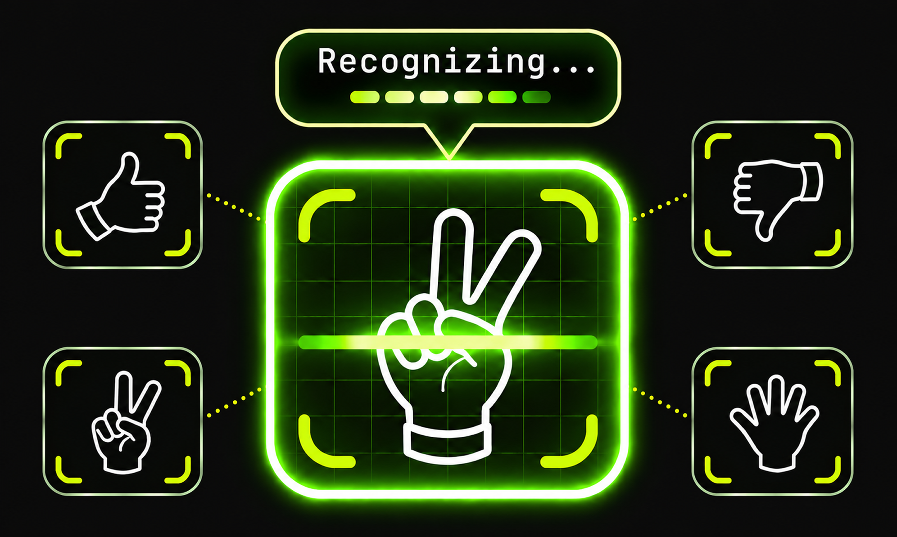

Hand Gesture Recognition

Explore how AI recognizes hand gestures under different real-world conditions
Try the ModelProject Introduction
The hand gesture recognition model was developed using Teachable Machine and trained to recognize four gestures: Thumbs Up, Thumbs Down, Peace Sign, and Open Palm. We chose hand gestures because we wanted to see how the model would perform when the same gesture was shown in different ways. We were interested in things like lighting, background, distance from the camera, and which side of the hand was facing the camera.
Dataset & Data Collection
For our dataset, each group member contributed at least 100 hand gesture samples. We started with 300 images in total, with 75 images in each of the four gesture classes. We tried to use different backgrounds, lighting, and hand directions when taking the pictures.
After testing the first model, we went back to look at the dataset and noticed a few things that might be affecting the results. Most of the images were taken pretty close to the camera, and the direction of the thumb was not always consistent in the Thumbs Up and Thumbs Down classes. We also noticed that some hand orientations appeared more often than others in the training images.
Because of this, we added more samples and kept the number of samples balanced across four classes, with 85 samples in each class. For Thumbs Up and Thumbs Down, we adjusted some samples so the direction of the thumb was more consistent within each class. For Peace Sign and Open Palm, we also added some samples with different hand orientations.
View Training Dataset →Model Training Process
After completing the data collection process, we ensured that all images were converted from PNG to JPG format and positioned in the correct way to maintain consistency and compatibility. We then used Google's Teachable Machine to create an image classification model consisting of four classes: Open Palm, Peace Sign, Thumbs Down, and Thumbs Up. To evaluate how the number of training samples affected the model's accuracy, we trained the model using two different sample sizes for each class. This allowed us to compare the results and determine which sample size produced the most accurate and consistent predictions.
We compared the original model trained with 75 samples per class to the updated model trained with 85 samples per class to determine whether increasing the number of training images improved its performance. By testing and comparing the two versions we were able to determine that increasing the sample size from 75 to 85 images per class improved the model's overall accuracy and ability to correctly classify hand gestures. When collecting the additional 10 samples per class we focused on incorporating variations that were underrepresented in the original dataset to improve the diversity of the training images and strengthen the model's ability to recognize different variations of each hand gesture.
Interactive Classifier
The Interactive Classifier page our team developed brings our classifier model to life and provides a hands-on way to play with it and test its effectiveness. By first allowing the website to access their live webcam feed, a user can perform any of the four recognized hand gestures and see what the model thinks. Every frame from the webcam feed is individually passed to the teachable machine model, which the model then evaluates to return a prediction to the interface. This live interface grants users the ability to see in real time how the model's predictions change as they try out different gestures at different orientations.
In the predictions window, the classifier first displays the label and confidence score for the main class it believes it sees. It then further breaks down confidence scores for other classes below. In some cases a gesture may be recognized with only 80% confidence, and assign smaller probabilities to the other classes as well. By displaying all of these values together rather than just the most probable class, our interactive classifier acknowledges the uncertainty of the model. Seeing these shifting results in real time helps users to understand that this process is not just a matter of the computer determining the right answer. This helps users comprehend that the results are predictions based on training data provided by model owners, not certain truths discovered by the computer.
Demo Video
Connections to Unmasking AI
One connection to Unmasking AI is how much training data and testing conditions can affect the model's behavior. Even though we kept the same number of images in each class, the variation inside each class was not always balanced. For example, most of our original samples were taken pretty close to the camera, and some hand orientations appeared more often than others. This reminded us of Buolamwini's discussion about how the composition of a dataset can affect what an AI system is able to recognize. It also made us think that data is not completely neutral because people still decide how to collect it and what to include in the dataset.
Another connection is that AI outputs are shaped by the limits of the system. Our model only has four gesture classes, so when the input does not clearly match one of them, it still has to choose from those four options. During testing, we noticed that the model often changed to Thumbs Up when it was not sure about the gesture. We also noticed that when there was no hand in the frame, the model still made a prediction and often classified it as Thumbs Up. This made us think about how the categories used in an AI system are based on human decisions. It also showed us that a confident prediction does not always mean the model is correct.
Testing the model also showed us why testing under different conditions is important for finding limitations. The model seemed to work well when we tested gestures under conditions similar to the training images, but when we changed the distance or hand orientation, it became less stable and less accurate. This showed us that the model can work well under certain conditions, but problems can appear when those conditions change.
Reflection & Lessons Learned
One important lesson we learned during model testing was how camera perspectives can affect classification accuracy. During data collection, we used the back camera of a phone to capture our hand gestures, but during testing, we used the front-facing webcam on a laptop. Since front-facing webcams often capture images from a completely different perspective from phone cameras and also display mirrored images to users. These noted differences were likely the primary contributors to the model's incorrect identification of our gestures. Thumbs Down and Peace Signs were both frequently mistaken as Thumbs Up, and Thumbs Up were mistaken as Thumbs Down at times. These observations highlighted the importance of maintaining consistent camera perspectives between training and testing. This also highlighted camera perspective as an additional variation in data collection that can influence the model's classification accuracy. To address this issue we increased our sample size and included more variations in the training samples. Overall, this experience demonstrated how differences in data collection and testing conditions can influence model performance.
Another lesson taken away from this project is that providing a model with more data does not necessarily mean that the data improves. The testing we performed allowed us to identify the kinds of examples we were missing in our training examples, and we were able to target those gaps to give it more comprehensive data that it needed for greater success. However, had we not made those intentional efforts to fill those gaps we found, adding more of the same kinds of examples would have only served to hurt the model's performance.
Finally, this project showed us how quickly a seemingly simple classification task can grow in complexity. Despite scoping our project to classify just four hand gestures, we realized due to the model's initial performance how much variation can exist among images of just the same hand gesture. This really underscored the importance of iterative design in machine learning for us. Deploying a machine learning model or another kind of artificial intelligence algorithm without robust testing and further refinement is irresponsible. No product can possibly be perfect after one development pass.